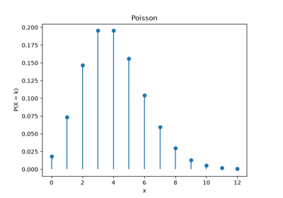
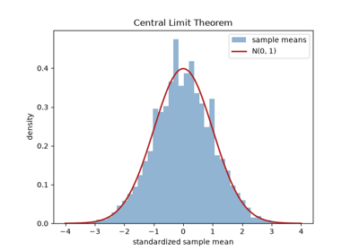
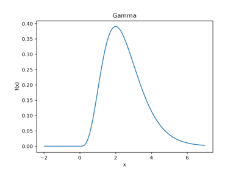
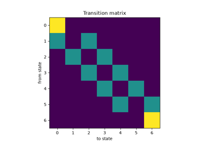

Breakthroughs in Probability Theory#
“The theory of probabilities is at bottom nothing but common sense reduced to calculus.” – Pierre-Simon Laplace, Theorie Analytique des Probabilites, 1812
Probability theory began as a gambler’s question – how should stakes be
divided in an interrupted game of chance – and only slowly grew into the
rigorous, measure-theoretic subject it is today. This chronology traces
the ideas behind mathematicskit.probability: the discrete and continuous
distributions, the limit theorems that explain why the normal
distribution shows up everywhere, and the Markov chains that model
memoryless random processes.
1654 – Pascal, Fermat, and the Problem of Points#
A gambler’s question relayed to Blaise Pascal by the Chevalier de Mere – how should the stakes of an interrupted game be divided fairly between two players, given the score so far – sparked a correspondence between Pascal and Pierre de Fermat in the summer of 1654 that is now generally credited as the founding exchange of mathematical probability theory. Their solution amounts to correctly enumerating and weighting the ways the remaining games could have played out – the same combinatorial counting that gives the binomial distribution its name and its \(\binom{n}{k}\) weights.
Implementation: mathematicskit.probability.systems.discrete.Binomial
implements exactly the distribution this counting problem generalizes
to, via scipy.stats.binom.

Binomial, Poisson, and geometric distributions
1713 – Jacob Bernoulli’s Law of Large Numbers#
Jacob Bernoulli’s Ars Conjectandi, published posthumously in 1713, proved what he called his “Golden Theorem”: as the number of independent trials grows, the observed relative frequency of an event converges to its true probability – the first rigorous law of large numbers, and the theoretical justification for the entire enterprise of estimating probabilities from observed frequency.
Implementation: mathematicskit.probability.systems.limit_theorems.law_of_large_numbers_trace()
demonstrates exactly this convergence directly, tracking the running
sample mean as it settles toward the true mean with increasing sample
size.
References: J. Bernoulli, Ars Conjectandi (Basel: Thurnisius, 1713), Part IV.

Law of Large Numbers and Central Limit Theorem
1733 – 1810 – De Moivre, Laplace, and the Central Limit Theorem#
Abraham de Moivre’s 1733 supplement to his own Doctrine of Chances derived the normal distribution as the limiting shape of the binomial distribution for large \(n\) – the first, special case of the central limit theorem. Pierre-Simon Laplace’s 1810 memoir generalized the result dramatically: the sum of a large number of independent random variables, essentially regardless of their individual distributions, converges to a normal distribution – explaining, more than any other single result, why the bell curve appears so pervasively across completely unrelated measurement problems.
Implementation: mathematicskit.probability.systems.limit_theorems.central_limit_theorem_sample_means()
demonstrates exactly this convergence for repeated sample means of a
non-normal (e.g. Poisson) distribution, cross-checked against
scipy.stats.kstest() in the test suite;
Normal is the limiting
distribution itself.
References: A. de Moivre, The Doctrine of Chances, 2nd ed. (London: Woodfall, 1738), a supplement first circulated privately in 1733; P.-S. Laplace, “Memoire sur les approximations des formules qui sont fonctions de tres grands nombres,” Memoires de l’Academie Royale des Sciences de Paris (1810).
Law of Large Numbers and Central Limit Theorem
1837 – Poisson’s Rare-Event Distribution#
Simeon Denis Poisson derived, as a limiting case of the binomial distribution when \(n\to\infty\) and \(p\to0\) with \(np\) held fixed, the distribution now named for him: the number of events occurring in a fixed interval, when those events happen independently at a constant average rate. First presented as a mathematical footnote in his 1837 treatise on legal and criminal probability, it is now the default model for rare, independent counting processes across essentially every applied field, from radioactive decay to call-center arrivals.
Implementation: mathematicskit.probability.systems.discrete.Poisson
implements exactly this limiting distribution, and its convergence from
the binomial for large \(n\), small \(p\) is checked directly in
this domain’s own examples.
References: S. D. Poisson, Recherches sur la probabilite des jugements en matiere criminelle et en matiere civile (Paris: Bachelier, 1837).
Binomial, Poisson, and geometric distributions
1933 – Kolmogorov’s Axioms#
Andrey Kolmogorov’s 1933 monograph Grundbegriffe der Wahrscheinlichkeitsrechnung gave probability theory, for the first time, a fully rigorous axiomatic foundation built on measure theory – events as sets, probability as a measure, independence and conditional probability as precisely defined derived notions. It settled, at a stroke, two centuries of informal (and occasionally contradictory) reasoning about what a “probability” actually is, and every distribution class in this package rests, ultimately, on Kolmogorov’s axioms holding.
Connection: mathematicskit.probability.core.base.DiscreteDistribution
and ContinuousDistribution, the
shared interfaces underlying every concrete distribution in this domain,
are exactly Kolmogorov’s measure-theoretic picture made concrete: a
pmf/pdf that is non-negative and integrates or sums to one, and
a cdf built from it as the corresponding probability measure.
References: A. N. Kolmogorov, Grundbegriffe der Wahrscheinlichkeitsrechnung (Berlin: Springer, 1933).

The gamma distribution generalizes the exponential
1906 – Markov Chains#
Andrey Markov introduced, in a 1906 paper motivated by a dispute over whether the law of large numbers requires independent trials, the notion of a chain of dependent trials in which each outcome depends on the previous one but on nothing earlier – the memoryless property that now bears his name. Markov’s own first application, famously, was a letter-by-letter statistical analysis of vowel/consonant sequences in Pushkin’s poem Eugene Onegin.
Implementation: mathematicskit.probability.systems.markov_chain.MarkovChain
implements exactly this framework – transition matrices, stationary
distributions via numpy.linalg.eig()/power iteration, and
absorption probabilities via numpy.linalg.solve().
References: A. A. Markov, “Rasprostranenie zakona bol’shikh chisel na velichiny, zavisyashchie drug ot druga,” Izvestiya Fiziko-matematicheskogo obshchestva pri Kazanskom universitete 15 (1906), 135-156.

Gambler’s ruin: absorption probabilities and expected duration
1949 – 1953 – Monte Carlo Methods#
Stanislaw Ulam, recovering from an illness and playing endless games of solitaire, wondered whether the odds of a successful outcome would be easier to estimate by simulating many random deals than by working out the combinatorics exactly – and realized the same trick applied to the neutron-diffusion calculations he and John von Neumann were working on at Los Alamos. Nicholas Metropolis, Ulam’s colleague, gave the method its enduring name (after the Monte Carlo casino) in a 1949 paper with Ulam; Metropolis and coauthors’ 1953 algorithm for sampling from a target distribution via a biased random walk became the foundation of Markov chain Monte Carlo, one of the most consequential computational techniques of the twentieth century.
Implementation: mathematicskit.probability.systems.monte_carlo.monte_carlo_integrate()
implements the basic method directly;
importance_sampling_integrate()
and control_variates_integrate()
implement two of the classic variance-reduction techniques built on top
of it.
References: N. Metropolis and S. Ulam, “The Monte Carlo Method,” Journal of the American Statistical Association 44(247) (1949), 335-341; N. Metropolis, A. W. Rosenbluth, M. N. Rosenbluth, A. H. Teller, and E. Teller, “Equation of State Calculations by Fast Computing Machines,” Journal of Chemical Physics 21(6) (1953), 1087-1092.

Variance reduction: plain vs. control-variate Monte Carlo